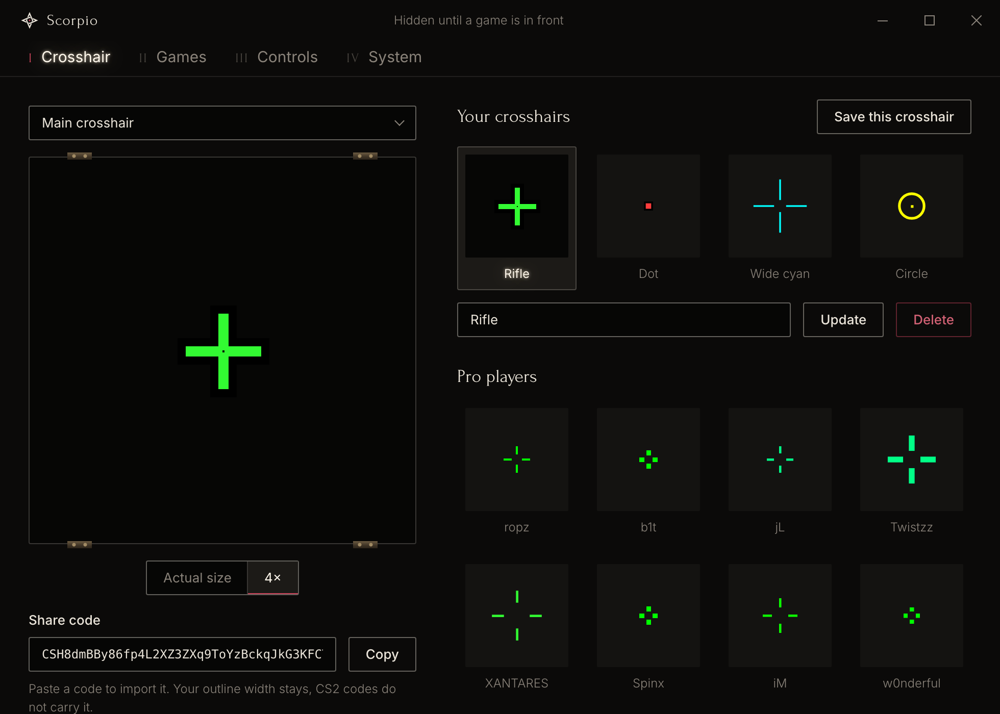
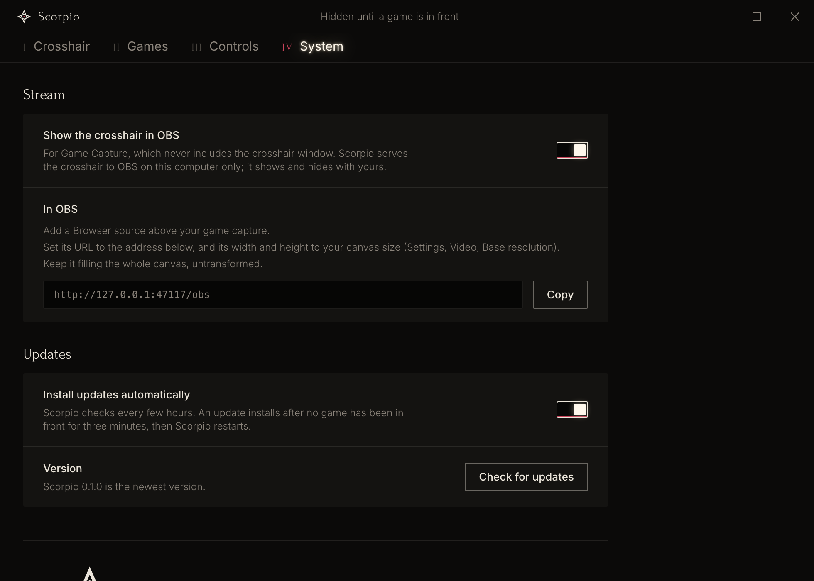

Scorpio draws a Counter-Strike 2 crosshair in its own window over your game. It shows the crosshair only while a game is in front, and it never opens, reads, hooks or injects into the game or its anti-cheat.
Version 0.1.0 · Windows installer, Linux AppImage and .deb · Free for non-commercial use
Systems
Windows 10 and 11. Linux with X11 or XWayland
Crosshair
CS2 settings and share codes, five static styles
While it waits
6.9 MB of memory, 0 ms of CPU over 10 s
Licence
PolyForm Noncommercial 1.0.0, source-available
When it shows
Only while a game is in front
Scorpio waits in the tray. The crosshair appears when the window in front is a game, and it disappears at once when you switch away.
A window counts as a game when you added it, when it is fullscreen, or when a launcher installed it: Steam, Epic Games, GOG, Ubisoft Connect, EA, Battle.net, Riot and Xbox on Windows, and Steam, Heroic and Lutris on Linux.
An added game is matched on two of four checks: program name, program path, window title and window class.
The crosshair
The crosshair from CS2, with its share codes
Paste a CS2 or CS:GO share code and Scorpio draws that crosshair. Copy gives a code that CS2 imports. There are five static styles and the settings of CS2: length, thickness, gap, centre dot, T shape, colour, opacity and outline.
Two things are finer than in CS2. Thickness moves in half steps, and the outline can be 1 to 6 pixels wide.
Scorpio includes the crosshairs of 13 pro players, keeps your saved crosshairs, and gives an added game its own crosshair. It centres the crosshair exactly on the monitor of the game.

Controls
Hide while aiming, and six shortcuts
Hide while aiming is for scoped weapons. Scorpio hides the crosshair while you hold the aim button, or on each press. It reads the button through raw input, the way a game does, and sends nothing to the game.
Global shortcuts lock and unlock the position, centre the crosshair, hide it, step through saved crosshairs and add the game in front. The default for hide is CtrlShiftAltH.
Stream
The crosshair in OBS, also with Game Capture
OBS Game Capture reads the frames of the game, so a crosshair in a separate window is never in the recording. Scorpio can serve the same crosshair to OBS as a Browser source.
In Scorpio, open the System tab and switch on Show the crosshair in OBS.
In OBS, add a Browser source above your game capture.
Set its URL to http://127.0.0.1:47117/obs.
Set its width and height to your canvas size.
Keep it filling the whole canvas, with no transform.
The server listens on your own computer only. While the switch is off, Scorpio opens no socket.

05
It never touches the game or its anti-cheat
Scorpio is a separate window on top of the game. It works only with what the operating system tells every program about windows and input. It never opens another process, reads or writes its memory, injects code, installs a hook, sends synthetic input, loads a driver, or draws into the frames of the game.
No overlay can promise that you will never be banned, and no anti-cheat vendor has reviewed or approved Scorpio. A game's terms can forbid external crosshairs whatever the technique. This table is every operating system call that Scorpio makes, so you can judge for yourself.
Need
Windows
Linux (X11)
Why it stays outside the game
Which window is in front
SetWinEventHook, out of context
_NET_ACTIVE_WINDOW events
Nothing is loaded into another process. An event, not a poll
Title, class and size of the window
GetWindowTextW, GetClassNameW, GetWindowRect
Window manager properties
Window manager data. No process is opened
Path of the program
NtQuerySystemInformation
/proc/<pid>/exe
No process handle is opened
Aim button and hide key
Raw Input on Scorpio's own window
XInput2 raw events
The input API that games read. No hooks
Shortcuts
RegisterHotKey
XGrabKey
The standard API for global shortcuts
The crosshair
A layered, topmost, click-through window
An override-redirect ARGB window
A separate window. Nothing is drawn into the game
Crosshair in OBS, opt-in
HTTP server on 127.0.0.1:47117
The same
Talks only to OBS on the same computer
One switch is not risk-free: Hide from screen capture. It is for Windows only and it is off by default. When it is on, screenshots, recordings and streams show the game without the crosshair. Cheat overlays use the same Windows call to hide from the screenshots that an anti-cheat takes, so an anti-cheat could take a closer look at Scorpio. Leave it off unless you need it.
06
About 7 MB of memory and no CPU while it waits
Every input is an event, and nothing polls. The settings window is a web view that exists only while it is open. The figures were measured on Windows 11 with a release build, and a check fails when one of them grows by more than 25 %.
6.9 MBPrivate memory, idle in the tray
0 msCPU time over 10 s idle
0Web view processes with the settings window closed
3.7 MBSize of scorpio.exe
07
Install Scorpio on Windows or Linux
Every file is on the latest release page. After the install, Scorpio starts in the tray. Click the tray icon to open the settings window.
Windows 10 and 11
Download the file that ends in -setup.exe.
Run the installer. It installs for your user account and does not ask for administrator rights.
Click the tray icon, paste a share code, and switch to your game.
The installer is not signed with a Windows code-signing certificate, so SmartScreen can show a warning the first time.
Linux with X11 or XWayland
Download the .AppImage file, or the .deb file for Debian and Ubuntu.
Make the AppImage executable and run it, or install the package with sudo apt install ./Scorpio_*.deb.
Click the tray icon, paste a share code, and switch to your game.
The AppImage updates itself. A game that runs as a native Wayland window is invisible to Scorpio.
08
Questions
Is a crosshair overlay bannable?
It depends on the game's rules, and no overlay can promise that you will never be banned. Anti-cheats look for programs that read or change a game. Scorpio does neither. It is a separate transparent window on top of the game, and it never opens the game's process, reads its memory, hooks it, injects code or sends input. A game's terms can still forbid external crosshairs, so check the rules of the game that you play. No anti-cheat vendor has reviewed or approved Scorpio.
Does Scorpio work with Vanguard, Easy Anti-Cheat, BattlEye or VAC?
Nobody has tested Scorpio against a specific anti-cheat yet, and none of these vendors has reviewed or approved it. What is known is what Scorpio does on your computer: it never touches the game's process or the anti-cheat's process. Keep Hide from screen capture off.
How do I use a CS2 crosshair code outside CS2?
Copy the share code in CS2, or from a site that lists pro crosshairs. In Scorpio, open the Crosshair tab and paste the code into Share code. Scorpio draws the same crosshair over any game it detects. A dynamic crosshair is shown in its static resting style.
Does Scorpio work on Linux?
Scorpio is built for Linux with X11 or XWayland, as an AppImage and a .deb package. It is less proven there than on Windows: the X11 layer has run under a virtual X server, and the full app has not been tested on a Linux desktop or in a game yet. Native Wayland windows are not supported.
Does the crosshair show on my stream or recording?
With OBS Display Capture it does, because Display Capture records the screen. With OBS Game Capture it does not, until you add Scorpio's Browser source. The setup is five steps and is described on this page.
Why does the crosshair not show over my game?
First look at the title bar of the settings window. If it says "Hidden by shortcut", press the hide shortcut again. If Scorpio does not see the window as a game, add the game on the Games tab. If the game runs in exclusive fullscreen, switch it to borderless or windowed fullscreen, because Windows may not draw other windows over an exclusive fullscreen game. On Linux, Scorpio sees only X11 windows.
Does Scorpio lower my frame rate or add input lag?
Scorpio does not touch the game or its input. While it waits, it uses 0 ms of CPU time over 10 seconds and 6.9 MB of memory. Its effect on the frame rate inside a running game has not been measured yet.
Can I use an image or a custom shape as a crosshair?
No. Scorpio has the crosshair system of CS2 only: five static styles and the settings of CS2.
Does Scorpio collect data or go online?
Scorpio has no telemetry and no account. It makes one kind of request: the update check to its releases on GitHub, and the download of an update. With automatic updates off, it checks only when you click Check for updates. The OBS source listens on your own computer only, and only while it is on.
Is Scorpio open source?
The source is public, and you can read it, change it and share your own versions for any non-commercial purpose. The licence is PolyForm Noncommercial 1.0.0, which forbids commercial use, so Scorpio is source-available and not open source in the OSI sense.
09
What is tested and what is not
Scorpio is at version 0.1.0. This is the state on 21 November 2026. The screenshots on this page show the real settings window in headless Chromium with sample data.
Area
State
Crosshair maths, share codes, game matching, launcher parsers
Unit tests
Windows build
Built, run and measured on Windows 11
Windows, inside a real game session
Not tested yet
Linux X11 layer
Run under a virtual X server. Not yet run on a Linux desktop
Crosshair in OBS
The local server has a test. Not tested inside OBS yet
Automatic updates
Written. Not yet exercised against a published release